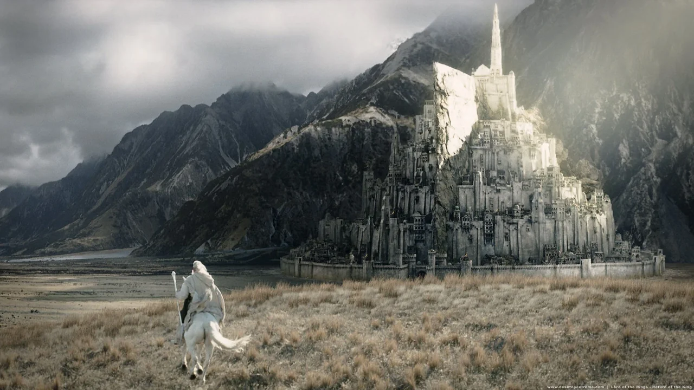

Info dan Pemeran
The Return of the King adalah film ketiga dan terakhir dari trilogi The Lord of the Rings. Catatan tontonan saya yang lain ada di profil Letterboxd saya (Aleanzho).
| Pemeran | Tokoh | Peran dalam cerita |
|---|

The Return of the King adalah film ketiga dan terakhir dari trilogi The Lord of the Rings. Catatan tontonan saya yang lain ada di profil Letterboxd saya (Aleanzho).
| Pemeran | Tokoh | Peran dalam cerita |
|---|
